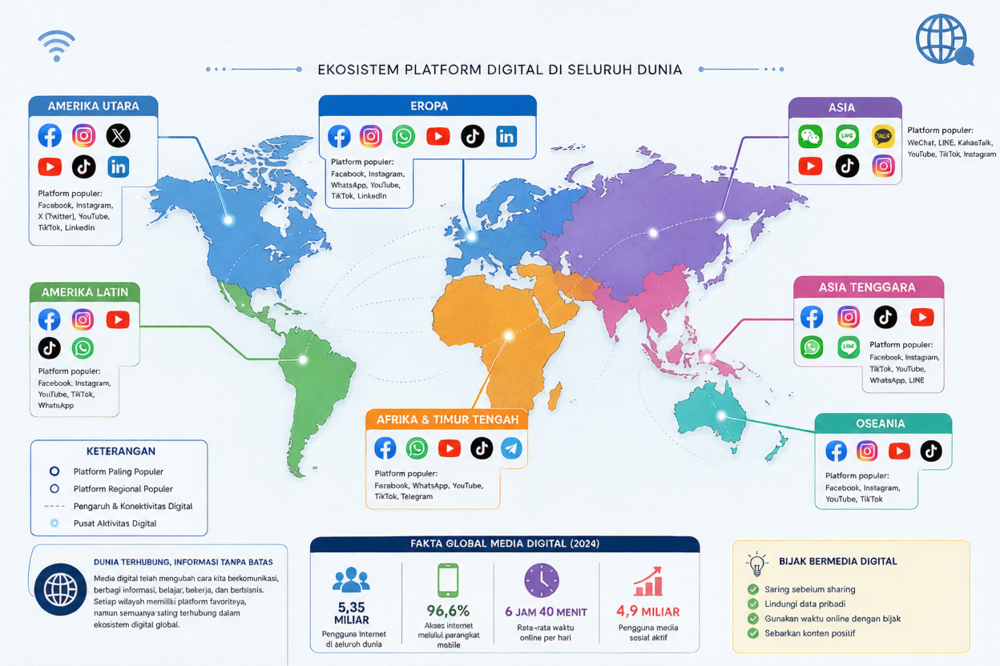
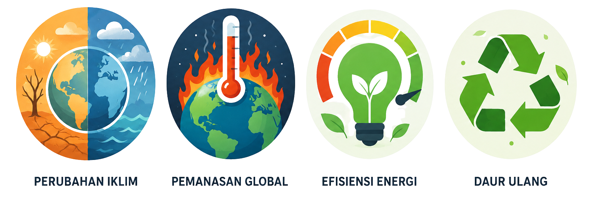

Halo, Kreator Hebat! 👋
“Pernahkah kamu berpikir bagaimana manusia membuat dan menikmati film dari masa ke masa? Pada pembelajaran kali ini, kamu akan diajak menikmati perjalanan transformasi teknologi serta media sosial yang terus berkembang pesat. Pilih misi yang ingin kamu pelajari atau lanjutkan pembelajaran sesuai rekomendasi sistem.”
Anda belum memulai satu pun Misi
Yuk mulai dari Misi 1 untuk membuka perjalanan belajarmu! 🚀
Mulai Misi 1
Teknologi Broadcasting & Perfilman
Evaluasi Akhir Kompetensi
Ukur penguasaan materi dari seluruh misi pembelajaran yang telah Anda selesaikan. Dapatkan sertifikasi kelulusan digital Anda di sini.
Misi 1 – Teknologi Broadcasting dan Perfilman
“Teknologi broadcasting dan perfilman terus berkembang dari penggunaan peralatan analog hingga pemanfaatan Artificial Intelligence. Dalam misi ini Anda akan menelusuri perjalanan transformasi teknologi yang mengubah cara manusia memproduksi dan mendistribusikan informasi serta karya audiovisual.”
Apa Itu Broadcasting dan Perfilman?
📡 Broadcasting
Broadcasting adalah proses penyampaian informasi, hiburan, pendidikan, dan berbagai pesan kepada masyarakat luas melalui media elektronik seperti radio, televisi, dan media digital.
🎬 Perfilman
Perfilman merupakan kegiatan yang berkaitan dengan produksi, distribusi, dan penyajian film sebagai media informasi, hiburan, pendidikan, dan ekspresi kreatif.
⚡ Mengapa Teknologi Penting?
Perkembangan teknologi telah mengubah cara industri broadcasting dan perfilman bekerja. Proses produksi yang dahulu dilakukan secara analog kini beralih ke sistem digital yang lebih cepat, efisien, dan mampu menjangkau audiens global.
Radio merupakan media komunikasi massa yang menyampaikan informasi melalui gelombang elektromagnetik. Radio menjadi media broadcasting pertama yang mampu menjangkau masyarakat luas secara bersamaan.
Pada masa awal perkembangan radio, teknologi yang digunakan masih bersifat analog. Siaran radio dipancarkan melalui gelombang elektromagnetik dengan sistem AM (Amplitude Modulation) dan FM (Frequency Modulation). Masyarakat mendengarkan siaran menggunakan pesawat radio konvensional yang mampu menangkap sinyal dari stasiun pemancar. Pada masa itu, radio menjadi media komunikasi dan sumber informasi utama karena mampu menjangkau wilayah yang luas dengan biaya yang relatif murah. Berbagai informasi penting, seperti berita, pendidikan, hiburan, hingga pengumuman pemerintah disampaikan melalui radio. Meskipun memiliki peran yang sangat besar, radio analog memiliki beberapa keterbatasan, antara lain kualitas suara yang dipengaruhi oleh cuaca, gangguan sinyal, serta keterbatasan jangkauan frekuensi. Namun demikian, radio analog menjadi fondasi penting bagi perkembangan teknologi broadcasting modern yang kita kenal saat ini.
Perkembangan teknologi informasi dan internet membawa radio memasuki era digital. Pada era ini, masyarakat tidak lagi bergantung pada perangkat radio konvensional untuk menikmati siaran. Berbagai inovasi seperti radio streaming, radio online, podcast, dan smart radio memungkinkan pendengar mengakses konten audio melalui jaringan internet kapan saja dan di mana saja. Radio streaming memungkinkan siaran didengarkan secara langsung melalui aplikasi atau situs web, sementara podcast memberikan kebebasan kepada pengguna untuk memilih dan mendengarkan program sesuai kebutuhan tanpa terikat jadwal siaran. Kehadiran smart radio yang terhubung dengan internet juga semakin memperluas akses terhadap berbagai stasiun radio dari seluruh dunia. Selain meningkatkan kualitas suara, teknologi digital memungkinkan interaksi yang lebih aktif antara penyiar dan pendengar melalui media sosial, kolom komentar, maupun fitur pesan instan. Perubahan ini menjadikan radio tetap relevan di tengah perkembangan media digital dan kebutuhan masyarakat modern yang menginginkan akses informasi yang cepat, fleksibel, dan personal.
Dari Televisi Analog hingga Smart TV. Televisi merupakan media broadcasting yang menyampaikan informasi melalui kombinasi suara dan gambar bergerak. Kehadiran televisi membawa perubahan besar dalam cara masyarakat memperoleh informasi, pendidikan, hiburan, dan berbagai peristiwa penting secara langsung.
Bagian awal perkembangannya, televisi menggunakan sinyal analog untuk mengirimkan gambar dan suara. Masyarakat menonton siaran menggunakan antena dan televisi tabung. Meskipun menjadi media hiburan utama pada masanya, kualitas gambar dan suara masih dipengaruhi oleh kondisi sinyal.
Perkembangan teknologi menghadirkan televisi digital dengan kualitas gambar yang lebih jernih, suara yang lebih baik, serta penggunaan frekuensi yang lebih efisien. Teknologi ini juga memungkinkan hadirnya berbagai fitur tambahan yang tidak dimiliki televisi analog.
Saat ini televisi telah terhubung dengan internet melalui Smart TV. Pengguna dapat mengakses YouTube, layanan streaming, video on demand, dan berbagai aplikasi digital secara langsung tanpa bergantung pada siaran televisi konvensional.
John Logie Baird: Dikenal sebagai pelopor pengembangan televisi mekanik yang menjadi dasar lahirnya teknologi televisi modern.
Dari Film Bisu hingga Streaming Digital. Film merupakan media komunikasi yang menyampaikan pesan melalui rangkaian gambar bergerak, suara, musik, dan efek visual. Film tidak hanya berfungsi sebagai hiburan, tetapi juga sebagai sarana pendidikan, informasi, dan ekspresi seni.
Pada masa awal perkembangannya, film belum memiliki suara sehingga cerita disampaikan melalui gerakan pemain dan teks sederhana. Meskipun terbatas, film bisu menjadi fondasi perkembangan industri perfilman modern.
Perkembangan teknologi menghadirkan film berwarna dengan kualitas gambar yang semakin baik. Saat ini produksi film menggunakan teknologi digital yang memungkinkan proses pengambilan gambar, penyuntingan, dan distribusi dilakukan secara lebih cepat dan efisien.
Film kini dapat dinikmati melalui berbagai platform streaming dan video on demand. Penonton dapat mengakses film kapan saja dan di mana saja melalui perangkat yang terhubung ke internet.
Perkembangan teknologi telah membawa perubahan besar dalam industri broadcasting dan perfilman. Proses produksi yang dahulu membutuhkan peralatan besar dan biaya tinggi kini dapat dilakukan dengan perangkat digital yang lebih praktis, cepat, dan efisien.
Teknologi digital juga memungkinkan distribusi konten melalui berbagai platform seperti televisi digital, media sosial, podcast, dan layanan streaming sehingga jangkauan audiens menjadi lebih luas.
Selain itu, perkembangan teknologi menciptakan berbagai profesi baru di bidang industri kreatif, seperti Content Creator, Video Editor, Motion Graphic Designer, Podcast Producer, Social Media Specialist, dan Digital Marketing Specialist.
📈 Dampak Positif
✅ Produksi lebih cepat dan efisien
✅ Kualitas audio dan video semakin baik
✅ Distribusi konten lebih luas
✅ Muncul peluang kerja baru
✅ Mendukung kreativitas dan inovasi
⚠️ Tantangan
⚠️ Persaingan konten semakin ketat
⚠️ Perkembangan teknologi sangat cepat
⚠️ Risiko penyebaran informasi yang tidak akurat
⚠️ Kebutuhan peningkatan kompetensi digital
Saat ini seseorang dapat merekam video, mengedit, dan menyiarkannya kepada jutaan orang hanya dengan menggunakan smartphone dan koneksi internet.
Seret (drag) kartu di bawah ini dengan mouse atau jari untuk menyusun urutan era yang tepat, lalu klik "Periksa Urutan":
Uji pemahamanmu mengenai transformasi lini masa media broadcasting di sini.
Akan terbuka penuh setelah membaca materi & menyelesaikan kuis.
Misi 2 – Media Digital & Jenis Media Digital
“Media digital hadir dalam berbagai bentuk dan karakteristik. Pada misi ini kamu akan menjelajahi berbagai platform media digital dan menentukan media yang paling tepat untuk tujuan komunikasi tertentu.”

Media digital adalah media yang menggunakan teknologi komputer dan internet untuk membuat, menyimpan, mengolah, serta menyebarkan informasi dalam bentuk teks, gambar, audio, video, maupun animasi. Berbeda dengan media konvensional, media digital memungkinkan informasi diakses kapan saja, di mana saja, dan melalui berbagai perangkat seperti komputer, smartphone, maupun tablet.
Media digital juga bersifat interaktif. Pengguna tidak hanya menerima informasi, tetapi dapat memberikan komentar, berbagi konten, bahkan membuat konten sendiri. Oleh karena itu, media digital menjadi bagian penting dalam komunikasi, pendidikan, bisnis, dan industri kreatif.
Media digital memanfaatkan teknologi digital dan internet sehingga informasi dapat diakses dengan cepat, mudah, dan interaktif.
Media digital memiliki beberapa karakteristik yang membedakannya dari media konvensional:
✔ Informasi disajikan dalam format digital.
✔ Mudah diperbarui tanpa mencetak ulang.
✔ Dapat diakses melalui internet.
✔ Bersifat interaktif sehingga pengguna dapat memberikan tanggapan secara langsung.
✔ Penyebaran informasi berlangsung sangat cepat.
Karakteristik tersebut membuat media digital menjadi sarana komunikasi yang efektif di era modern. Namun, pengguna juga harus mampu memilih informasi yang benar dan bertanggung jawab dalam menggunakan media digital.
Kecepatan dan interaktivitas merupakan ciri utama media digital.
Jenis media digital sangat bervariasi bergantung format layanan penayangan yang dijalankan, meliputi:
1. Jaringan Sosial & Komunitas Online: Tempat berinteraksi dua arah (Contoh: Instagram, Facebook, TikTok).
2. Audio Podcasting: Siaran rekaman suara berbasis topik pilihan.
3. Video & Movie On-Demand: Streaming video berkualitas tinggi tanpa terikat jam siaran televisi.
4. Situs Web Komersial & Portal Berita: Sumber rujukan dokumen teks dan multimedia digital secara berkala.
Manfaat utama mencakup aksesibilitas informasi tanpa sekat geografis, kemudahan kolaborasi kerja jarak jauh, efisiensi operasional promosi niaga, serta mendukung wadah kreasi bagi para pegiat Content Creator muda.
Tantangan terbesar yang wajib diantisipasi mencakup merebaknya berita palsu (Hoax), ancaman kejahatan siber (Cyber Crime), potensi ketergantungan/kecanduan gadget, serta penurunan privasi data pribadi di ruang siber.
Pasangkan platform di kiri dengan fungsi media yang tepat di kanan:
Jawaban tercatat. Pasangan yang berwarna hijau sudah tepat, coba tinjau kembali yang berwarna merah.
Kerjakan mini studi kasus untuk mendapatkan lisensi pemahaman media.
Otomatis aktif penuh setelah menyelesaikan kuis materi ini.
Misi 3 – Regulasi Media & Artificial Intelligence
“Sebagai insan penyiaran dan perfilman, Anda perlu memahami regulasi, hak cipta, dan etika penggunaan Artificial Intelligence. Dalam misi ini, Anda akan mengambil keputusan pada berbagai kasus digital yang sering terjadi di dunia media.”
Regulasi media adalah aturan yang mengatur penyelenggaraan media dan penyiaran agar informasi yang disampaikan kepada masyarakat tetap benar, bermanfaat, dan tidak merugikan pihak lain.
Di Indonesia, regulasi media bertujuan menjaga kualitas siaran, melindungi hak masyarakat memperoleh informasi yang benar, serta memastikan media menghormati norma hukum, budaya, dan etika.
Regulasi juga membantu menciptakan persaingan media yang sehat dan mencegah penyebaran konten yang mengandung kekerasan, ujaran kebencian, pornografi, maupun informasi palsu.
Regulasi media menjaga agar informasi yang diterima masyarakat tetap berkualitas, aman, dan bertanggung jawab.
Penyiaran di Indonesia diatur oleh Undang-Undang Nomor 32 Tahun 2002 tentang Penyiaran. Pelaksanaannya diawasi oleh Komisi Penyiaran Indonesia (KPI).
Beberapa prinsip utama penyiaran adalah:
✅ memberikan informasi yang benar
✅ menghormati keberagaman masyarakat
✅ melindungi anak dan remaja
✅ tidak menyiarkan berita bohong
✅ menghormati hak privasi seseorang
Setiap lembaga penyiaran wajib mematuhi aturan tersebut agar siaran tetap bermanfaat bagi masyarakat.
Media penyiaran memiliki tanggung jawab besar karena informasi yang disampaikan dapat memengaruhi cara berpikir masyarakat.
Selain mematuhi hukum, setiap pengguna media digital juga harus menerapkan etika digital. Etika digital berarti menggunakan internet dan media sosial secara bertanggung jawab.
Beberapa contoh etika digital antara lain:
✔ memeriksa kebenaran informasi sebelum membagikannya
✔ menghargai karya orang lain
✔ tidak melakukan cyberbullying
✔ menjaga data pribadi
✔ menggunakan bahasa yang sopan
Sebagai calon tenaga kerja industri kreatif, kemampuan menjaga etika digital merupakan kompetensi yang sangat penting.
Teknologi yang baik harus digunakan dengan sikap yang baik pula.
Artificial Intelligence (AI) adalah teknologi yang memungkinkan komputer melakukan tugas yang biasanya membutuhkan kecerdasan manusia.
Di dunia broadcasting dan perfilman, AI digunakan untuk:
🎥 membantu proses editing video
🎙 membersihkan suara (noise reduction)
📝 membuat subtitle otomatis
🌍 menerjemahkan bahasa
🎬 membuat efek visual
📊 menganalisis preferensi penonton
AI membantu pekerjaan menjadi lebih cepat dan efisien, tetapi kreativitas manusia tetap menjadi faktor utama dalam menghasilkan karya yang berkualitas.
AI adalah alat bantu yang meningkatkan efisiensi, bukan pengganti kreativitas manusia.
Di balik berbagai manfaatnya, penggunaan AI juga memiliki beberapa tantangan yang wajib diwaspadai:
• penyebaran informasi palsu (deepfake)
• pelanggaran hak cipta
• penyalahgunaan data pribadi
• ketergantungan terhadap teknologi
• berkurangnya kemampuan berpikir kritis jika AI digunakan tanpa bijak
Oleh karena itu, penggunaan AI harus disertai tanggung jawab, etika, dan pemahaman terhadap aturan yang berlaku.
Manusia tetap bertanggung jawab atas hasil penggunaan teknologi AI.
Di industri broadcasting dan perfilman, regulasi dan AI saling melengkapi. Regulasi memastikan setiap konten yang diproduksi mematuhi hukum dan etika, sedangkan AI membantu meningkatkan kualitas dan efisiensi proses produksi.
Seorang editor video, kamerawan, content creator, maupun produser harus mampu memanfaatkan AI secara kreatif tanpa melanggar hak cipta, menyebarkan hoaks, atau menghasilkan konten yang merugikan masyarakat.
Kemampuan memahami regulasi dan memanfaatkan AI secara bertanggung jawab akan menjadi nilai tambah bagi lulusan Broadcasting dan Perfilman di dunia kerja.
Lulusan Broadcasting tidak hanya dituntut menguasai teknologi, tetapi juga memiliki etika dan tanggung jawab profesional.
Pilih tindakan paling tepat untuk merespons skenario di bawah ini:
"Sebagai editor video di sebuah stasiun TV, Anda ditugaskan membuat klip berita kilat. Karena dikejar tenggat waktu, Anda berpikir untuk menggunakan klip suara hasil kloning AI (Deepfake Voice) tokoh publik tanpa izin resmi agar pekerjaan instan selesai."
Evaluasi pemahaman Anda mengenai payung hukum media penyiaran dan kode etik AI di sini.
Akan terbuka penuh setelah membaca materi & menyelesaikan simulasi keputusan.
Misi 4 – Green Broadcasting & Lingkungan
“Industri broadcasting dan perfilman juga memiliki dampak terhadap lingkungan. Pada misi ini Anda akan mempelajari cara produksi media yang lebih ramah lingkungan melalui konsep Green Broadcasting, reuse, recycling, dan efisiensi energi.”
🌍 Green Broadcasting Corner

📡 Apa itu Green Broadcasting?
Green Broadcasting adalah konsep penyelenggaraan kegiatan broadcasting dan perfilman yang ramah lingkungan dengan memanfaatkan teknologi secara efisien, mengurangi limbah, serta menghemat penggunaan energi dan sumber daya alam.
Dalam industri media, Green Broadcasting tidak hanya berfokus pada hasil produksi, tetapi juga pada proses kerja yang memperhatikan keberlanjutan lingkungan. Mulai dari tahap perencanaan, produksi, distribusi, hingga pengelolaan peralatan dilakukan dengan prinsip yang lebih hemat energi dan minim pencemaran.
🌍 Mengapa Green Broadcasting Penting?
Industri broadcasting dan perfilman menggunakan berbagai peralatan elektronik yang membutuhkan energi listrik serta menghasilkan limbah elektronik. Jika tidak dikelola dengan baik, aktivitas tersebut dapat meningkatkan emisi karbon dan mempercepat kerusakan lingkungan.
Penerapan Green Broadcasting membantu mengurangi dampak negatif terhadap lingkungan melalui penggunaan teknologi yang lebih efisien, pengurangan limbah, serta pemanfaatan sumber daya secara bertanggung jawab. Selain menjaga kelestarian lingkungan, langkah ini juga mendukung terciptanya industri kreatif yang berkelanjutan.
Industri broadcasting dan perfilman membutuhkan berbagai sumber daya, seperti listrik, bahan bakar, perangkat elektronik, dan material produksi. Penggunaan sumber daya tersebut dapat menghasilkan emisi gas rumah kaca yang berkontribusi terhadap pemanasan global dan perubahan iklim.
Contohnya:
⚡ Penggunaan energi: kamera, lampu, komputer editing, studio, AC, dan server membutuhkan listrik.
🚗 Transportasi: perjalanan kru, talent, dan pengangkutan peralatan menggunakan kendaraan yang menghasilkan emisi.
🎬 Material produksi: pembuatan set, properti, kostum, dan perlengkapan sekali pakai dapat menghasilkan limbah.
💻 Peralatan elektronik: pergantian kamera, komputer, baterai, dan perangkat digital menghasilkan limbah elektronik (e-waste).
📡 Distribusi digital: streaming dan penyimpanan konten juga membutuhkan pusat data dan jaringan yang menggunakan energi.
Pemanasan global adalah peningkatan suhu rata-rata bumi yang terutama dipicu oleh meningkatnya konsentrasi gas rumah kaca. Dampaknya dapat memperparah perubahan iklim, seperti perubahan pola cuaca, kenaikan permukaan laut, dan cuaca ekstrem.
Karena itu, Green Broadcasting diperlukan untuk mengurangi dampak lingkungan melalui efisiensi energi, pengurangan limbah, penggunaan kembali (reuse), daur ulang (recycling), serta pemanfaatan teknologi secara bijak.
🎥 Intinya: Broadcasting dapat memberikan dampak terhadap lingkungan, tetapi proses produksi yang direncanakan secara efisien dan berkelanjutan dapat membantu mengurangi jejak lingkungan industri audiovisual.
Life Cycle produksi adalah rangkaian tahapan yang dilalui suatu produk sejak bahan baku diperoleh, diproduksi, digunakan, hingga akhirnya digunakan kembali (reuse) atau didaur ulang (recycling). Dalam konteks broadcasting dan perfilman, konsep ini membantu siswa memahami bahwa sebuah produk atau peralatan produksi tidak berhenti ketika selesai digunakan. Setiap tahap dapat memberikan dampak terhadap lingkungan.
Alur sederhananya sebagai berikut:
Bahan baku → Produksi → Distribusi → Penggunaan → Perawatan → Reuse → Recycling
Dengan memahami life cycle, siswa belajar bahwa produksi tidak hanya berorientasi pada hasil karya, tetapi juga memperhatikan dampak lingkungan dari awal hingga akhir.
Dalam broadcasting dan perfilman, penerapan life cycle dapat membantu mengurangi limbah, penggunaan bahan baku, konsumsi energi, dan dampak lingkungan, sekaligus membentuk sikap kerja yang lebih bertanggung jawab.
“Gunakan lebih lama, gunakan kembali, dan daur ulang sebelum menjadi limbah.”
Beberapa contoh penerapan Green Broadcasting dalam kegiatan broadcasting dan perfilman antara lain:
✔ Menggunakan dokumen digital untuk mengurangi penggunaan kertas.
✔ Mematikan lampu dan peralatan yang tidak digunakan.
✔ Memanfaatkan peralatan hemat energi.
✔ Mengurangi penggunaan plastik sekali pakai saat proses produksi.
✔ Mengelola limbah elektronik sesuai prosedur.
✔ Memanfaatkan teknologi digital untuk mengurangi penggunaan media penyimpanan fisik.
Dengan langkah sederhana tersebut, proses produksi menjadi lebih efisien sekaligus lebih ramah lingkungan.
Banyak perusahaan media mulai menerapkan konsep Green Broadcasting sebagai bagian dari tanggung jawab sosial dan lingkungan. Studio televisi modern menggunakan lampu LED hemat energi, sistem produksi tanpa kertas (paperless), serta penyimpanan data berbasis cloud untuk mengurangi penggunaan perangkat fisik.
Selain itu, industri juga mulai menerapkan prinsip Reduce, Reuse, dan Recycle dalam penggunaan properti, kostum, dekorasi, serta pengelolaan limbah produksi sehingga proses kreatif menjadi lebih berkelanjutan.
Sebagai calon insan broadcasting dan perfilman, kamu memiliki peran penting dalam menjaga lingkungan melalui karya kreatif. Kebiasaan sederhana seperti menghemat listrik, menggunakan dokumen digital, memilah sampah, serta memanfaatkan kembali peralatan yang masih layak pakai merupakan langkah nyata mendukung Green Broadcasting.
Selain itu, kamu juga dapat menghasilkan konten yang mengajak masyarakat peduli terhadap lingkungan, perubahan iklim, dan gaya hidup berkelanjutan.
Kreativitas yang baik bukan hanya menghasilkan karya menarik, tetapi juga memberi dampak positif bagi lingkungan.
Perkembangan teknologi digital membuka peluang bagi industri broadcasting dan perfilman untuk menjadi lebih efisien, inovatif, dan ramah lingkungan. Penggunaan Artificial Intelligence (AI), komputasi awan (cloud computing), produksi digital, serta distribusi konten melalui internet membantu mengurangi penggunaan sumber daya dan limbah produksi.
Green Broadcasting menjadi bagian penting dari industri kreatif masa depan karena menggabungkan teknologi, kreativitas, dan kepedulian terhadap lingkungan. Dengan menerapkan prinsip keberlanjutan sejak sekarang, generasi muda dapat berkontribusi menciptakan industri media yang lebih bertanggung jawab dan berdaya saing global.
Klasifikasikan skenario tindakan di bawah ini dengan memilih kategori yang tepat:
Status Tantangan: Pilihan Anda tercatat otomatis! Terus evaluasi setiap tindakan.
Evaluasi pemahaman Anda mengenai siklus hidup produk, penghematan energi, dan efisiensi penyiaran digital.
Akan terbuka penuh setelah Anda selesai membaca dan melakukan klasifikasi aksi di atas.
Virtual Creative Media Project
"Anda adalah tim produksi media digital yang mendapat tugas membuat kampanye edukasi bertema generasi muda peduli lingkungan. Tentukan strategi produksi yang tepat dengan mempertimbangkan teknologi, media digital, AI, regulasi, dan Green Broadcasting."
Judul Proyek: "Youth Voice for Green Future"
Target Misi: Sebagai tim produksi media digital, susunlah kampanye edukasi yang mengajak generasi muda peduli lingkungan. Tentukan keputusan terbaik pada 5 tahap produksi di bawah ini, lalu lihat hasil evaluasi proyek Anda.
0 dari 5 tahap dipilih
Menghasilkan gambar berkualitas tinggi dengan efisiensi produksi modern, cocok untuk kampanye berdampak luas.
Praktis dan hemat biaya, cukup cocok untuk konten media sosial berdurasi pendek.
Kurang efisien dan kurang sesuai untuk distribusi konten digital masa kini.
Jangkauan luas dan interaktif, paling sesuai untuk menyasar generasi muda secara cepat.
Kredibel dan tahan lama, namun jangkauan terhadap generasi muda relatif terbatas.
Kurang interaktif dan kurang tepat sasaran untuk kampanye edukasi generasi muda.
AI digunakan untuk editing, subtitle otomatis, dan noise reduction, namun seluruh hasil tetap diverifikasi tim produksi.
Seluruh naskah dan narasi dibuat AI tanpa pengecekan ulang, berisiko menimbulkan informasi keliru (halusinasi AI).
Kurang efisien di era produksi digital yang serba cepat.
Menggunakan sumber data yang valid, mencantumkan sumber dengan jelas, serta mematuhi UU ITE dan hak cipta.
Proses verifikasi sumber dikurangi demi mengejar tenggat waktu produksi.
Melanggar hak cipta dan etika digital, berisiko menimbulkan masalah hukum.
Menggunakan peralatan hemat energi, dokumen digital (paperless), serta memanfaatkan kembali (reuse) properti produksi lama.
Penghematan energi hanya diterapkan pada sebagian proses produksi, belum konsisten.
Mencetak seluruh dokumen produksi dan membeli properti baru yang hanya dipakai sekali, tidak ramah lingkungan.
🎬 Hasil Proyek: Youth Voice for Green Future
Evaluasi Akhir Pembelajaran
“Selamat! Anda telah menyelesaikan seluruh misi pembelajaran. Saatnya menguji pemahaman Anda melalui evaluasi akhir untuk melihat sejauh mana kompetensi yang telah dicapai.”
1. Fungsi utama dari Report Text dalam komunikasi ilmiah atau teknis adalah...
2. Struktur umum (Generic Structure) dari sebuah Report Text terdiri atas...
3. Ciri kebahasaan yang paling dominan digunakan dalam Report Text adalah...
4. Mengapa teks laporan harus menggunakan kata benda umum (General Nouns) seperti "Computers" bukan "My Computer"?
5. Manakah yang termasuk ke dalam bagian "General Classification" pada laporan instalasi listrik?
6. Dalam validasi data menggunakan AI, apa yang dimaksud dengan fenomena "AI Hallucination"?
7. Tindakan terbaik siswa jika menemukan data statistik dari prompt AI yang meragukan adalah...
8. Teknik "Prompt Engineering" yang efektif untuk menyusun Report Text bermutu tinggi harus memuat...
9. Di bawah ini merupakan bentuk pemanfaatan AI yang bijak dalam literasi kritis, yaitu...
10. Mengapa data akurasi kelistrikan sangat penting dimasukkan ke dalam teks laporan siswa SMK?
11. Apa definisi dasar dari gerakan Green Broadcasting di industri penyiaran?
12. Langkah nyata pengurangan limbah fisik pada tahap pra-produksi media digital adalah...
13. Cloud Storage / Komputasi awan mendukung prinsip Green Broadcasting karena...
14. Mengganti lampu pijar studio konvensional dengan lampu teknologi LED merupakan bentuk dari...
15. Tindakan "Reuse" dalam proses pembuatan dekorasi set panggung siber/film tercermin pada...
16. Salah satu ancaman lingkungan terbesar yang dihasilkan langsung dari industri IT dan media komunikasi adalah...
17. Sebagai generasi kreatif, peran utama Anda dalam menyuarakan kelestarian lingkungan melalui jalur media adalah...
18. Apa yang harus dicantumkan dalam bagian referensi/sitasi teks laporan untuk menghindari plagiarisme?
19. Istilah "Life Cycle Assessment" (LCA) produk dalam ekosistem industri kreatif merujuk pada...
20. Mengapa kebersihan aspek keselamatan ketenagakerjaan (K3) berkaitan dengan Green Studio?
21. Manakah dari kalimat di bawah ini yang paling tepat menggunakan struktur Passive Voice ilmiah?
22. Mengurangi pemakaian plastik kemasan katering konsumsi crew film saat syuting di lapangan merupakan aksi...
23. Jika Anda diberikan tugas membuat laporan text tentang "Solar Panel Installation", informasi teknis apa yang wajib ada?
24. Kemampuan membedakan fakta objektif dengan opini subjektif dalam teks informasi disebut...
25. Visi utama platform inovasi "LABIRIN NALAR" dalam pembelajaran kejuruan abad-21 adalah...
Kasus Kelompok Kreatif:
Sebuah tim produksi film SMK ingin membuat dekorasi panggung bernuansa lokal. Daripada membeli bahan plastik sekali pakai baru, mereka memilih mengumpulkan dekorasi kayu bekas inventaris sekolah lama dan memodifikasinya menggunakan pencahayaan lampu LED hemat daya.
📊 Hasil Analisis Capaian Anda
Selamat! Anda diakui memiliki literasi kritis tinggi, kecakapan akurasi data AI, serta kepedulian Green Broadcasting dalam ekosistem industri kreatif modern.
Refleksi & Sertifikat
“Selamat! Anda telah menyelesaikan seluruh rangkaian pembelajaran Transformasi Media Kreatif. Silakan lakukan refleksi terhadap pengalaman belajar Anda dan unduh sertifikat sebagai bentuk apresiasi atas pencapaian yang telah diraih.”
📊 Ringkasan Pencapaian Belajar
🌱 Lembar Refleksi Mandiri Peserta Didik
Isi komitmen belajar Anda untuk mengaktifkan validasi portofolio: